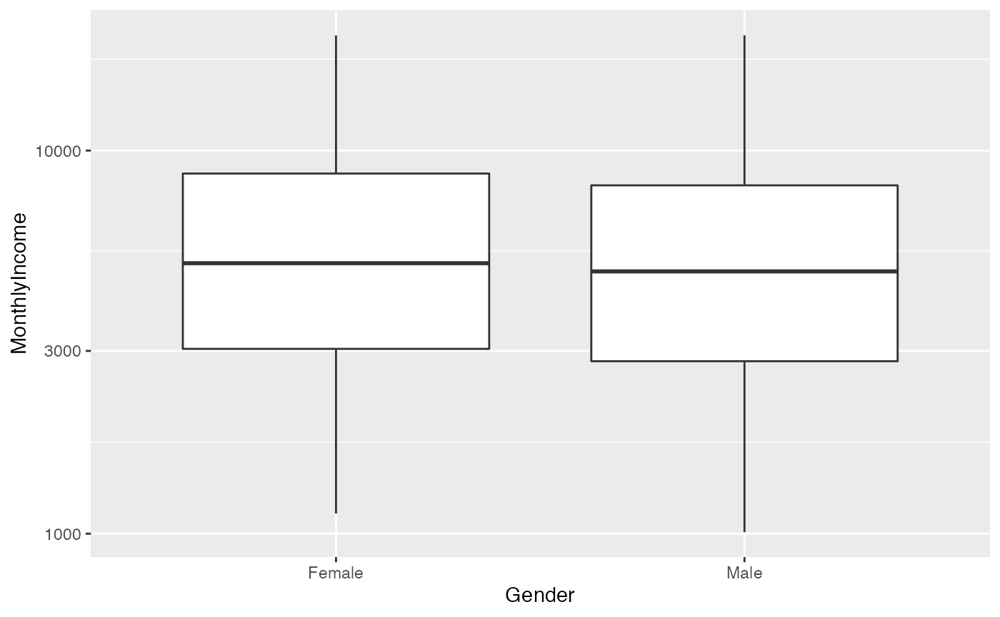
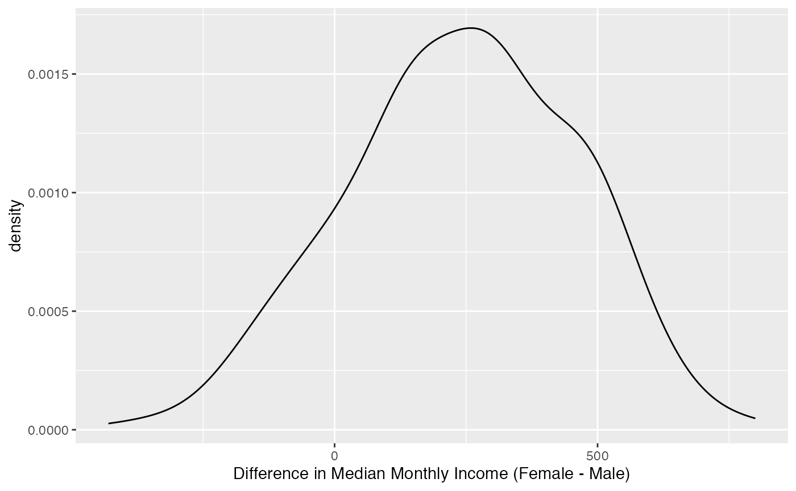

rsample: create resamples
rsample.Rmd
library(mariatidymodels)
library(rsample)
library(tidymodels)
#> ── Attaching packages ───────────────────────────────── tidymodels 0.1.2.9000 ──
#> ✓ broom 0.7.5 ✓ purrr 0.3.4
#> ✓ dials 0.0.9 ✓ recipes 0.1.15
#> ✓ dplyr 1.0.4 ✓ tibble 3.0.6
#> ✓ ggplot2 3.3.3 ✓ tidyr 1.1.2
#> ✓ infer 0.5.4 ✓ tune 0.1.2
#> ✓ modeldata 0.1.0 ✓ workflows 0.2.1
#> ✓ parsnip 0.1.5 ✓ yardstick 0.0.7
#> ── Conflicts ───────────────────────────────────────── tidymodels_conflicts() ──
#> x purrr::discard() masks scales::discard()
#> x dplyr::filter() masks stats::filter()
#> x dplyr::lag() masks stats::lag()
#> x recipes::step() masks stats::step()
library(modeldata)Let’s get the attrition data from modeldata package
data("attrition", package = "modeldata")There are two main methods for resampling (taking repeated samples from our dataset):
Cross-validation
Bootstrapping
Cross-validation
It is use to test how the result of a statistic analysis will generalize to a new situation.

V-fold cross-validation randomly splits the data into V groups of roughly equal size (called “folds”). Repeat is optional, and will make copies of each fold.
Note that rsample objects also always contain a character column called id that labels the partition.
We can get the partitioned data for each split with analysis or assessment.
analysis(rs_obj$splits[[1]]) %>% class()
#> [1] "data.frame"
analysis(rs_obj$splits[[1]]) %>% dim()
#> [1] 1323 31
assessment(rs_obj$splits[[1]]) %>% dim()
#> [1] 147 31
# We can also incorporate the analysis and assesment into vfold_cv data list
rs_obj %>%
mutate(df_ana = map(splits, analysis),
df_ass = map(splits, assessment))
#> # 10-fold cross-validation repeated 10 times
#> # A tibble: 100 x 5
#> splits id id2 df_ana df_ass
#> <list> <chr> <chr> <list> <list>
#> 1 <split [1.3K/147]> Repeat01 Fold01 <df[,31] [1,323 × 31]> <df[,31] [147 × 31…
#> 2 <split [1.3K/147]> Repeat01 Fold02 <df[,31] [1,323 × 31]> <df[,31] [147 × 31…
#> 3 <split [1.3K/147]> Repeat01 Fold03 <df[,31] [1,323 × 31]> <df[,31] [147 × 31…
#> 4 <split [1.3K/147]> Repeat01 Fold04 <df[,31] [1,323 × 31]> <df[,31] [147 × 31…
#> 5 <split [1.3K/147]> Repeat01 Fold05 <df[,31] [1,323 × 31]> <df[,31] [147 × 31…
#> 6 <split [1.3K/147]> Repeat01 Fold06 <df[,31] [1,323 × 31]> <df[,31] [147 × 31…
#> 7 <split [1.3K/147]> Repeat01 Fold07 <df[,31] [1,323 × 31]> <df[,31] [147 × 31…
#> 8 <split [1.3K/147]> Repeat01 Fold08 <df[,31] [1,323 × 31]> <df[,31] [147 × 31…
#> 9 <split [1.3K/147]> Repeat01 Fold09 <df[,31] [1,323 × 31]> <df[,31] [147 × 31…
#> 10 <split [1.3K/147]> Repeat01 Fold10 <df[,31] [1,323 × 31]> <df[,31] [147 × 31…
#> # … with 90 more rowsWe can see that the analysis data set is 90% of the data used for modeling, and the assessment data set is the remaining 10%. We can now write a function that:
- Fits a logistic regression model with the analysis data set
- Predicts using the assessment data
- Calculate whether the prediction was correct
holdout_results <- function(splits, ...) {
# Fit a glm model with 90% of the splits
mod <- glm(..., data = analysis(splits), family = binomial)
# Save the 10%
assesmentdata <- assessment(splits)
# `augment` will save the predictions with assesmentdata
res <- broom::augment(mod, newdata = assesmentdata)
# Class predictions on the assessment set from class probs
lvls <- levels(assesmentdata$Attrition)
predictions <- factor(ifelse(res$.fitted > 0, lvls[2], lvls[1]),
levels = lvls)
# Calculate whether the prediction was correct
res$correct <- predictions == assesmentdata$Attrition
# Return the assessment data set with the additional columns
res
}This function is going to take our resample data rs_obj and a formula that specifies a logistic regression model to the data. For example we can model attrition with job satisfaction, gender, and monthly income.
mod_form <- as.formula(Attrition ~ JobSatisfaction + Gender + MonthlyIncome)
rs_obj$results <- map(rs_obj$splits,
holdout_results,
mod_form)
rs_obj
#> # 10-fold cross-validation repeated 10 times
#> # A tibble: 100 x 4
#> splits id id2 results
#> <list> <chr> <chr> <list>
#> 1 <split [1.3K/147]> Repeat01 Fold01 <tibble [147 × 34]>
#> 2 <split [1.3K/147]> Repeat01 Fold02 <tibble [147 × 34]>
#> 3 <split [1.3K/147]> Repeat01 Fold03 <tibble [147 × 34]>
#> 4 <split [1.3K/147]> Repeat01 Fold04 <tibble [147 × 34]>
#> 5 <split [1.3K/147]> Repeat01 Fold05 <tibble [147 × 34]>
#> 6 <split [1.3K/147]> Repeat01 Fold06 <tibble [147 × 34]>
#> 7 <split [1.3K/147]> Repeat01 Fold07 <tibble [147 × 34]>
#> 8 <split [1.3K/147]> Repeat01 Fold08 <tibble [147 × 34]>
#> 9 <split [1.3K/147]> Repeat01 Fold09 <tibble [147 × 34]>
#> 10 <split [1.3K/147]> Repeat01 Fold10 <tibble [147 × 34]>
#> # … with 90 more rowsNow we can compute the accuracy values for all of the assessment data sets:
map(rs_obj,length)
#> $splits
#> [1] 100
#>
#> $id
#> [1] 100
#>
#> $id2
#> [1] 100
#>
#> $results
#> [1] 100
rs_obj$accuracy <- map_dbl(rs_obj$results, function(x) mean(x$correct))
summary(rs_obj$accuracy)
#> Min. 1st Qu. Median Mean 3rd Qu. Max.
#> 0.7755 0.8214 0.8401 0.8388 0.8588 0.9048This is not a great model since the baseline accuracy to beat is the rate of non-attrition, which is 0.8388. One problem with this glm model is that is a fairly biased model; it will not adapt well to new situations. However, it has low variance, since it leverages all the datapoints to estimate the parameters.
Bootstrapping
Bootstrapping on the other hand, is resampling with replacement. Bootstrapping is generally used to make sense of a distribution of interest, but we can also use bootstrapping to estimate model performance.

We can assess difference across groups, such as MonthlyIncome across genders:
ggplot(attrition, aes(x = Gender, y = MonthlyIncome)) +
geom_boxplot() +
scale_y_log10()
It looks like the mean of monthly income is slightly higher for females. We could formally compare the median monthly incomes for the two groups with a t-test; instead we can use bootstrap to inference if there is a difference in monthly incomes using confidence intervals.
set.seed(353)
bt_resamples <- bootstraps(attrition, times = 500)
analysis(bt_resamples$splits[[1]]) %>% dim()
#> [1] 1470 31
assessment(bt_resamples$splits[[1]]) %>% dim()
#> [1] 558 31
analysis(bt_resamples$splits[[1]]) %>% filter(Gender=="Male") %>% pull(MonthlyIncome) %>% median()
#> [1] 4771
analysis(bt_resamples$splits[[1]]) %>% filter(Gender=="Female") %>% pull(MonthlyIncome) %>% median()
#> [1] 4907
analysis(bt_resamples$splits[[2]]) %>% filter(Gender=="Male") %>% pull(MonthlyIncome) %>% median()
#> [1] 4683
analysis(bt_resamples$splits[[2]]) %>% filter(Gender=="Female") %>% pull(MonthlyIncome) %>% median()
#> [1] 4965.5We can write a function to compare median differences.
median_diff <- function(splits) {
x <- analysis(splits)
median(x$MonthlyIncome[x$Gender == "Female"]) -
median(x$MonthlyIncome[x$Gender == "Male"])
}This function is then computed across each resample:
bt_resamples$wage_diff <- map_dbl(bt_resamples$splits, median_diff)We can visualise that difference between genders
ggplot(bt_resamples, aes(x = wage_diff)) + geom_line(stat = "density", adjust = 1.25) + xlab("Difference in Median Monthly Income (Female - Male)")
We can now compute confidence intervals from the bootstrap distribution. A 95% confidence interval for the difference in the means would be:
The calculated 95% confidence interval contains zero, so we don’t have evidence for a difference in median income between these genders at a confidence level of 95%.
Comparing resamples methods
We have seen that resamples methods produce model performance estimates, and there is a trade-off between bias and variance for these method.
Variance: is mostly driven by the number of resamples (less folds CV have more variance than more folds). Bootstrap samples produce performance estimates that have very low variance.
Bias: is mostly driven by the amount of data that is held back. Bootstrap has large bias compared to CV.
Max Kuhn insight is that he tend to favor 5 repeats of 10-fold CV unless the size of the assessment data is large enough.
Source
This post is an adaptation from rsample vignette, resampling methods with R, resampling methods and Resampling for evaluating performance. Those are fantastic resources to get a better understanding of the underlying principles of resampling.